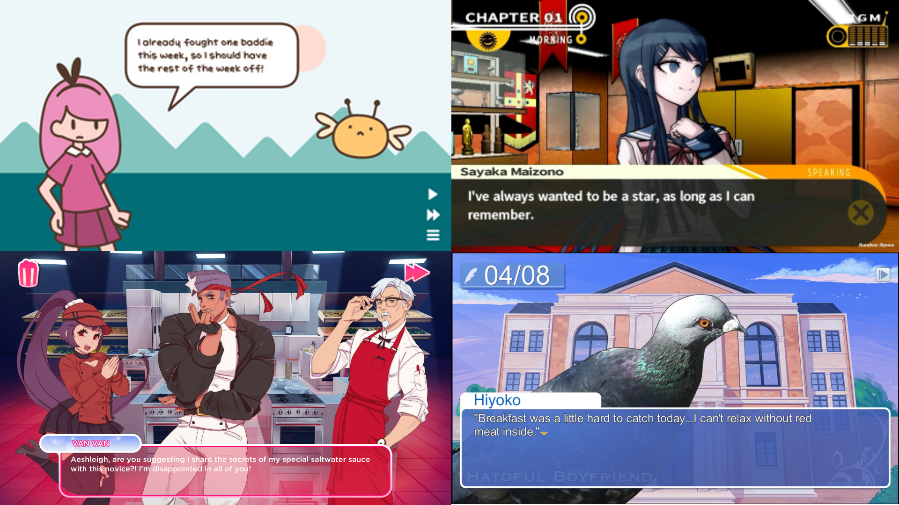
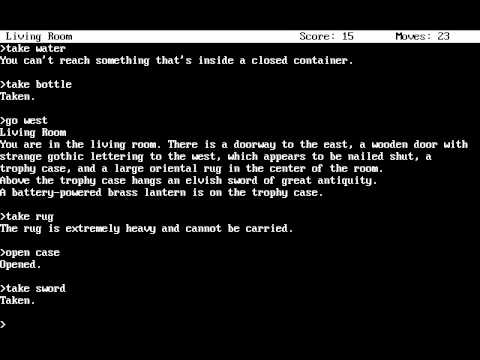

The Vnpy Language
Vnpy is a Python-based programming language developed for the purpose of streamlining the creation of visual novels, acting in a similar manner to libraries, engines, and other DSLs intended for producing video games (such as Gamemaker and Unity). Using the pygame Python library, it allows users to translate code into rendered visual and textual elements.
The following documentation refers to several test programs used to showcase Vnpy’s functionality—It is recommended to run the specified programs at the same time while reading this presentation for a more hands-on and in-depth experience. In order to run the programs, please follow the provided README file within the “vnpy” directory or follow the instructions below.
1Installation and Running Guide
1.1Libraries
Vnpy relies on several Python libraries that must be installed before being able to run the interpreter file, “vn.py”. These dependencies can be found in the requirements.txt file. In order to install them all automatically, first make sure your system has Python3 installed. Using Python3, navigate into the “vnpy” directory and run the command
pip install -r requirements.txt
After all libraries have been installed, you may now run "vn.py" and your own .vn files.
1.2Running .vn Files
Vnpy files are distinguished by the .vn file extension. All provided sample code in the language will have this extension; however, this is only for user convenience, as having a specific extension is not required for the interpreter to work. In order to run these files, run the command
py vn.py input
in the “vnpy” directory where input is the name/pathname to the .vn file to be run.
Example code referred to throughout the course of this documentation can be found in the “sample_code” directory. The exact commands used to run these files will be provided throughout the course of this documentation.
2What Are Visual Novels?
To those unaware, visual novels are a hybrid form of media between video games and (as the name would suggest) novels. Elements from traditional video games such as user choice, branching paths, internal logic, and rendered visuals are incorporated into a story in order to create a unique experience. As shown from the screenshots below, beyond the general setup of text layered on top of an image, visual novels can range drastically in terms of style and presentation.
Furthermore, they can also vary heavily in terms of length, depending on the type of story and to what detail the story is told in. Some can take only a few minutes to get through, while others may take dozens of hours. Popular visual novels include the games in the Ace Attorney and Danganronpa franchises, and Doki Doki Literature Club.
2.1Origins: The Text Adventure Game
Many similarities exist between visual novels and text-adventure games from the late 1900s such as Zork and Night House—some may even consider text-adventure games to be the progenitor of visual novels, or at least of the general idea of adding user input and branching paths into text-based stories. However, while while the two are quite similar in some aspects, visual novels tend to be distinct in having less open-ended input (presenting users with a list of choices as opposed to an open prompt, as was common for text-adventure games), being more story-focused, and—of course—having visuals to accompany them, as well as having extra gameplay features only possible in a visual medium such as the ability to point and click around a virtual environment.
Beyond functionality, when it comes to the manner of storytelling, visual novels lie closer to screenplays and movie scripts—focusing on dialogue over environmental descriptions and small details—while text-adventure games have more in common with traditional books and novels. This difference can be attributed simply to the presentation of text in both mediums: While text-adventure games have the luxury of an entire screen/terminal to display text on at once, visual novels are limited to only a few readable lines at a time, meaning story beats tend to be condensed and portrayed through dialogue as opposed to heavy descriptions.
3Purpose
3.1Visual Novels: A Niche(?) Genre
While visual novels are not the most popular medium in the world, they remain important due to their inherent versatility. Stories spanning several different genres have been portrayed within visual novels, from romance to horror to mystery to comedy—As long as a story can be portrayed in text-format, it can be reasonably portrayed in a visual novel, and sometimes even better due to added visuals and other features such as audio and timing. Even extremely linear stories do not have to compromise when it comes to the user interactivity aspect of visual novels, as while many visual novels contain branching paths and narratives, such branches do not have to be completely story-changing to work—some visual novels opt to have no user options at all.
When it comes to the development side of things, the simplistic design of visual novels allows them to remain accessible to beginner and small-time programmers/game developers, requiring not as much overhead, asset creation, or playtesting in comparison to traditional video games—The aforementioned Doki Doki Literature Club, despite being more complex than most visual novels, was created by a single developer. The relatively low budget associated with visual novels, paired with the fact that visual novels do not have to conform to any specific length, also makes the medium perfect for side-projects and hobbies. As a notable example, the Hiveswap Friendsim series acts as a subsidiary series to the point-and-click HIVESWAP videogame series, being of much shorter length and having less story and general gameplay elements, but showing off lore and background information not found in the main games.
While many may dismiss visual novels as being a niche market, these attributes make them popular in the indie scene, acting as a gateway for new developers entering the programming and game development scene, or otherwise just acting as a creative outlet for storytelling and visual arts. Breakout hits such as Doki Doki Literature Club have been known to even garner a mainstream audience, while the Ace Attorney and Danganronpa series have become long-term and well-known staples within the videogame industry, each having sold millions of copies on their own.
3.2On Building a Visual Novel
Despite their popularity, unlike most traditional video games there are not many options available when it comes to creating visual novels. Where text-adventure games can be easily created in basically any programming language with an I/O, the visual aspect of visual novels adds much complexity to the creation of what otherwise is a simple medium, often requiring either visual libraries or—more commonly—the use of higher-level game engines such as Unity in order to make something both functional and visually appealing. Knowing how to use Unity or programs like it is much more unlikely than traditional programming languages, and learning them can be a daunting task in comparison. Furthermore, using current game engines often requires building a visual novel system framework up from scratch, as little to none are suited specifically for visual novels. Thus, while on paper visual novels are easy and accessible to develop, in practice there still exist many barriers to entry.
3.3Vnpy Applications
Our language—Vnpy—is a DSL we created to remedy the above problem. It is specifically suited for the creation of visual novels, being complex enough to accomodate popular visual novel gameplay elements yet not so complex as to be as inaccessible as building a visual novel framework from scratch. The design philosophy we followed in order to make this a reality was to base Vnpy off of preexisting languages—most notably Lox. Many programmers are already familiar with C-style languages such as C++ and Java and their associated syntax, and will thus be able to jump into the language without having to deal with a steep learning curve, avoiding the problem of requiring upcoming visual novel developers to pick up a completely new and unfamiliar language. Furthermore, the elegant simplicity of Lox will allow programmers to focus less on how to work out using the language and more on the higher-level aspects of game development, such as writing and asset-creation.
When it comes to the specific functions of the language itself, we have included not only the bare minimums of being able to render images and text, but also staples features within visual novels such as being able to play audio. Of course, due to the scope of this project and the desire to not overcomplicate things, Vnpy was created using a pragmatic approach as we asked the question “What exactly is a visual novel?” and from there aimed to tailour the language such that any possible definitions can be reasonably created or re-created within it. Branching choices, animations, audio cues—as all of these are elements of what constitute a visual novel, Vnpy works to support them.
4Language Overview
4.1A High-Level Language
Considering Vnpy is intended for game creation, we decided to make it a high-level language. Despite their complexity, DSLs and engines used for creating video games in general tend to be high-level in order to abstract tedious aspects of development such as visuals, and to allow programmers to focus on holistic decisions and game logic. Vnpy accomplishes this by simplifying game elements such as images into simple statements, and by utilizing a new scene object type. While making it high-level does provide limitations in terms of customization, users are otherwise saved from much of the behind-the-scenes hassle involved in creating a visual novel from scratch in pygame or by some other means.
While Vnpy would otherwise still be fully functional on its own, it is not simplified so much that it does not support any custom features at all. As stated earlier, it incorporates many aspects of the Lox language, giving users the ability to combine arithmetic operations and logic statements with the more language-specific features in order to streamline the coding process and push the boundaries of the language while still carrying the elegant simplicity of Lox. Examples of this will be showcased later in the section Flexibility in Design.
4.2Lox-Based
Just like Lox, Vnpy supports dynamic typing and reassignment using the standard integer, float, string, and boolean data types (as well as functions). It also similarly utilizes curly brackets and semicolons to mark blocks and statements respectively.
let A = 1;
let B = A;
let B = “A”;
{
let C = 12.5; //Comments are made using "//"
}
From the code above, we can see that a slight difference from Lox is that instead of using the keyword var, Vnpy uses let to initialize variables akin to Javascript. Another difference is that log is used instead of print in order to output values to the command line.
//print 1; log 1;
This change is rather appropriate from a development standpoint, as most of the programs developed using Vnpy will show text on a graphic display as opposed to the command line. Thus, unlike print, log is mostly used for debugging.
The rest of the language—arithmetic operations, conditional blocks, etc—is the exact same…with three major exceptions, which will be covered in the next section.
We tested the Lox-part of Vnpy using the “00_lox.vn” file, which is the test code we also used for the previous Lox Interpreter project, sans the features covered in the next section. As expected, since no Vnpy-specific commands are used, no visual elements are rendered upon running the file.
py vn.py sample_code/00_lox.vn
4.3Simplifications in Design
For-loops, classes, and closures are not supported within the scope of Vnpy. While it may appear to be unwise to leave these out, in practice their exclusion hardly hinders using Vnpy at all, as although games benefit from coding abstractions, classes and simulated classes using closures tend to be going too far for the scope of a visual novel—at most, only functions are needed. In fact, most Vnpy programs using internal logic will really only need global variables at most. As for for-loops, Vnpy still supports while-loops, so for-loops can be recreated easily and are not necessary.
5Unique Features and Functionality
5.1Config
Vnpy allows users to set configuration settings within their code using the config statement. Thus, instead of having fixed values, users can customize the screen height and width of their game as seen below.
config width 1000; config height 600;
The above settings are used for the sample code “01_config1.vn”—Compare those dimensions with those used in “02_config2.vn”.
py vn.py sample_code/01_config1.vn py vn.py sample_code/02_config2.vn
Users also have the ability to configure volume using config volume. Of course, without audio we won’t be able to test it just yet—we’ll cover audio later down the line.
config volume 0.75;
These are the three main basic configuration options used in a Vnpy program. config statements must always be put before any other code, and once set, their values cannot be changed. In the case that a user forgets to set them, default values are used, demonstrated in “03_configDefault.vn”.
py vn.py sample_code/03_configDefault.vn
Another configuration option exists called mode, which determines which mode the “visual novel” will run in, the words “visual novel” being in quotes because if this option is set to anything other than it’s default value of graphic, the rendered game will be in a pure text/ASCII text-adventure where text is outputted to the command line, as opposed to in a visual novel format.
config mode “graphic”; //vs config mode “text”;
We can see an example of this by running the program “04_configText.vn”.
py vn.py sample_code/04_configText.vn
A mode like this would be ideal for people with slower computers that cannot handle pygame well, or for audiences nostalgic for text-adventure video games. However, considering this mode is not within the main scope or focus of Vnpy, and also considering not all features are present within this mode (nor do the ones that are present necessarily work), it will not be covered within this documentation. Use at your own risk.
5.2Display and Wait
If you have been following along by writing your own code whilst reading this documentation, and have tried running it after writing your three config statements, you may have noticed that while the screen does render, it only does so for a second before closing, and nothing is shown on it! The former problem can be explained by the fact that—as it goes with most any other language—Vnpy will close the program as soon as all code has been run. If we want to show our configured screen and hold it there, we must make use of the waitClick() and waitKey() functions. These do exactly what they sound like they do, in that they halt statements afterward from being run until the player clicks on the screen or presses any button while in focus of the window respectively. By adding a waitClick() or waitKey() function to the end of our program, we can have it linger there until the user chooses to close the program—This method is what has been used for the previous example codes.
config width 500; config height 400; … waitClick(); //End of game
These functions are to usually be used in conjunction with the display statement, which prints out a given string to be displayed on screen.
display “Hello world!”; display “String” + “Concatenation”;
Successive displays will replace previously displayed content (showing only one string on screen at a time—this is how it works in standard visual novels). Furthermore, Vnpy automatically splits up longer strings into multiple lines in order to prevent overflow.
display … waitClick(); display … waitClick(); …
Alternating display statements and wait functions like in the code above creates the effect found in most—if not all—visual novels where players progress through dialogue by clicking or pressing a key, letting them read at their own pace without having to show mountains of text all at once. A standard example of this can be shown in the file “05_text.vn file”
py vn.py sample_code/05_text.vn
display and waitClick()/waitKey() thus go hand in hand—having two display statements next to each other like in the first display example will cause the first to be skipped over as the interpreter immediately evaluates the next display statement before the player has had time to read it, as shown in the file “06_secretMessage.vn”.
py vn.py sample_code/06_secretMessage.vn
Putting multiple display statements in succession like so is a common mistake when using Vnpy, and its solution—that being to insert waitClick() or waitKey() between every one of them—may make one wonder why not just have display statements automatically wait after being called? You’ll see the possibilities that arise when separating these two elements of Vnpy in the first few sections of Flexibility in Design, but for now just know that—as said section’s name implies—it allows us to do a lot more than if display statements and wait functions were hard-coded together.
As a final note, you might have noticed from the previous two example files that only one of the two wait functitons are generally used at once. This is done to keep user input consistent—it would be disorentiating for players to have to constantly switch between clicking or pressing keys to continue. For the rest of the code shown throughout this documentation, assume that waitClick() will be used, and that you will need to progress by clicking.
5.3Image
Having display statements is good and all, but if we want to show that text over something other than the black voids seen thus far, we must use image statements. image takes a show or hide specifier as well as a value corresponding to a string containing the file/path name of the image asset to be shown or hidden.
let background = “assets/field.jpg”; image show background; … image hide background;
The results of using the above code snippet can be seen in example file “07_summerDream.vn”.
py vn.py sample_code/07_summerDream.vn
As you may have noticed, more than one image can be displayed throughout the course of a program. “07_summerDream.vn” only shows one at a time, but if you remove the line
image hide background;
from the file and run it again, you’ll notice that the result looks exactly the same. This is because Vnpy supports image layering—the image shown using the image show statement will be rendered on top of all previously rendered images. An image show statement will furthermore override any previous display statements. Thus, if you want to show text over an image, make sure to render the image first like so
image show "image.png"; display "This is image."; waitClick(); //not this display "This is image."; image show "image.png"; waitClick();
Vnpy is not only able to use different image file formats, but also resolution sizes. In order to maximize user convenience, images are automatically stretched to fit the current screen resolution, meaning no code regarding where on the screen to place an image is needed. We can test this by running the files “08_imageTest1.vn” and “09_imageTest2.vn”, which both use the same image but are configured to have different screen resolutions.
py vn.py sample_code/08_imageTest1.vn py vn.py sample_code/09_imageTest2.vn
At first glance, this design decision does have the side effect where any image shown will completely override the next, thus making each successive one the de-facto background of the current scene. However, as stated earlier, Vnpy supports different image formats—including .png, and other formats that may support alpha transparency. Using this fact, we can do something clever like in “10_streetConversation.vn”.
py vn.py sample_code/10_streetConversation.vn
Here, an asset of a person with a transparent background is rendered over a normal image in order to simulate the look of them actually being part of the scene without having to create an entirely new asset containing both.
On a technical level, image statements are based on a sort of stack, meaning multiple of the same image can be rendered on top of each other, and image hide only hides the top-most image of the same name on the stack (or does nothing if said image is already hidden). You may have noticed this while looking at the code of “10_streetConversation.vn”, as when moving to a new scene with our morally-dubious street-goer, instead of hiding all images, we simply render the new images on top of the old ones and then hide them afterwards.
5.4Audio
While not a necessary part of visual novels, a staple of the genre also involves adding in music and general sound elements. Vnpy supports this through the audio statement, which works somewhat similarly to image, taking a string representing a file/path for a value to start playing—this is the part which config volume from before comes into play.
let radioMusic = "assets/lounge.mp3"; audio start radioMusic; … audio stop;
As seen in the above code, audio stop does not take in a value at all. This is due to the fact Vnpy operates only on one sound channel—Only one audio file can be played at a time (otherwise, the second started audio will overwrite the previous one if it is still playing), and audio stop stops the currently loaded file. Due to time and scope limitations, Vnpy also does not loop tracks after they are done playing, although of course for smaller works such as “11_lounge.vn”, this does not matter much as users will probably be finished reading before the music stops.
py vn.py sample_code/11_lounge.vn
Several higher-level workarounds for this limitation exist, from using longer/looped music files to switching between tracks between scenes. Alternatively, music could be forgone in the first place in order to use one-time sound effects (taking advantage of the fact that they won’t loop), as shown in “12_westernado.vn”.
py vn.py sample_code/12_westernado.vn
5.5Options
While some visual novels are completely linear like the examples shown thus far, most of them support branching choices at varying points throughout their stories. Vnpy supports these through the options block, which consists of various case do statements, each representing a different option for a player to choose from. The string value provided after case determines the text to be shown on the corresponding button, informing players of their choice. After do is a single-line statement—either Vnpy specific or a Lox command—that will be executed should the player choose that option. After the statement has been executed, the code after the options statement will be run.
display “Pick one.”;
options {
case “Door 1” do display “You got a car!”;
case “Door 2” do display “You got a donkey!”;
case “Door 3” do display “You got a donkey!”;
}
//continue with code
...
To see options blocks in action, try running the example file “13_totallyNormalConversation” multiple times and making different choices each time and noting the variations in dialogue.
py vn.py sample_code/13_totallyNormalConversation.vn
5.6Scenes, Jump, and Exit
While options completes the general foundation of a visual novel alongside display and image, its ability to only execute one statement per choice is rather limiting. We could theoretically bypass this by setting a variable to a number depending on the choice and then having an if-else statement afterwards.
let branch;
display …
options {
case … do branch = 1;
case … do branch = 2;
…
}
if (branch == 1) { … }
else if (branch == 2) { … }
…
However, a much more convenient solution already exists within Vnpy: Enter, scene and jump. At its core, a scene object is most equivocal to a block, in that it contains a series of statements to be executed in order. The main difference is that it can be given a name, and—just like functions—it is not executed immediately upon declaration. Instead, a scene object’s code can only be executed when a jump statement is called, at which point no code after the statement will be processed as the program “jumps” to the scene in a fashion similar to a goto statement.
scene a {
…
}
jump a;
//nothing after will be processed
After the code in a scene has been finished, the program will exit, thus concluding your visual novel. Alternatively, the game can be ended at any point by calling an exit statement.
… display “The End.”; waitClick(); exit; display “You won’t see this.”;
If instead at some point another jump occurs within a scene instead, the program moves on to processing the specified scene.
scene a {
…
//Program exits
}
scene b {
…
jump a;
}
jump b;
On a development level, scene objects can help programmers categorize large sections of code, similar to functions.
scene a {
…
jump b;
}
scene b {
…
jump c;
}
scene c {
…
}
jump a;
//vs
fun a(){
…
}
fun b(){
…
}
fun c(){
…
}
a();
b();
c();
As shown through the code above, functions are equivacable to scene objects at least when it comes to linear visual novels. Also just like functions, scenes are nestable, and you can call a scene within itself for recursive results.
scene a {
…
jump a;
}
scene b{
scene b2 {
…
}
jump b2;
}
If we want to add branching paths by using options, scene objects become much more desirable because they don’t add onto the program’s stack.
scene first {
…
options {
case “1” do jump second1;
case “2” do jump second2;
}
}
scene second 1 {
…
}
scene second 2 {
…
}
If we were to represent the above code purely using functions, it would look something like
fun first(){
…
options {
case “1” do second1();
case “2” do second2();
}
exit();
}
fun second1(){
…
}
fun second2(){
…
}
the problem being that even though no more code within first is intended to be executed after the options block, either second1 or second2 will be added onto the stack without first ever resolving until the entire program has. For visual novels with several different branching paths, or even an infinite amount such as in “14_maze.vn” (where a user can double back on their choices), this ends up using a lot of memory. For best programmer practice, it is thus best to use scenes in place of recursive/nested functions if using the stack is not necessary.
py vn.py sample_code/14_maze.vn
5.7Delay
The appropriately last Vnpy-specific functionality is the delay statement, which does exactly what you expect: stopping the execution of statements for a specified amount of seconds supplied as its value.
display “Wait a second.”; delay 1; display “Okay we’re good.”;
On its own, delay doesn’t really bring much new to the table—most visual novels can get away with not having it or similar functions that rely on the passage of time, instead relying purely on user input. The unique things a programmer can do with this command fall less under the basics of the language and more of what will be covered in the next section.
6Flexibility in Design
Now with the specifics of Vnpy out of the way, there are many things we can accomplish beyond what we have demonstrated in the rudimentary examples thus far, especially when adding the Lox portion of the language. From here on out are less technical details about the language and more so on how they can be implemented in smart and practical ways.
6.1Text Flow
Before the waitClick() and waitKey() functions were added to Vnpy, all of our test programs used the delay statement instead. When there are no options for user input, it is a natural alternative for progressing text and dialogue.
display “Person: Hello.”; delay 1.5; display “You: Hi. Do I know you?”; delay 1.5; display “Person: Yes indeed! I believe it was out on an expedition in the Himalayas where we met for the first time, frostbitten and beaten down by the elements.”;
Alternative is the right word to use, however. As you may notice from the above code, a problem arises from the fact that display statements can often be of varying length. Although Vnpy has a limit on how many characters can be shown at a time before overflow begins to occur, there is still a notable difference in reading time between a couple words and a full-length sentence. Having to fine-tune each delay statement to be proportional to the amount of words shown at a time can add a lot of tedious overhead. Furthermore, players would presumably have variable reading speeds, making it ineffective overhead as well. Considering these problems, what is the point of having a delay statement in the first place? Well, there are a few niche uses.
The most intuitive use comes from mimicking real-life pauses in conversation. Interruptions, awkward silences, slowed speech, stutters, etc. can all be portrayed in some capacity through our normal method of waiting for user input, sure. However, sometimes delay can represent them even better, especially when you consider momentarily taking away control and agency from the player can provide a meaningful contrast to constantly clicking or pressing a button.
display “‘Can you hear somethi-’”; waitClick(); audio start gunshot; display “*BANG*”; //vs display “‘Can you hear somethi-’”; delay 0.5; audio start gunshot; display “*BANG*”;
These tactics are especially useful within the horror subgenre of visual novels, as shown in “15_spookyMansion.vn”. After all, horror is all about buildups and surprises, as well as taking away control from the player when used in an interactive medium.
py vn.py sample_code/15_spookyMansion.vn
Another use comes when the text is interwoven with other mediums within the program, such as animations (which will be covered later) or—more commonly—voice acting, where a visual novel may prevent the player from progressing through dialogue until a voice clip has finished playing so that the clip does not end up playing over disparate sections of text.
display “‘Hi, it’s me.’”; audio start voice1; //1.25 seconds long delay 1.25 display “‘Hi, it’s me.’ >>”; waitClick();
This method is not always used in visual novels with voice acting—In fully voice-acted ones and video games in general, developers often allow players to skip forward, cutting off the current line of dialogue and starting the next one. However, in games with only partial voice acting, where the few sound clips there are may stand out and be used to heighten the gravity of a scene or highlight important information, it may be suitable to limit control every so often, such as in “16_televisionBroadcast.vn”.
py vn.py sample_code/16_televisionBroadcast.vn
6.2Hubs
As stated earlier, scenes are a good way to represent branching paths in visual novels. In many stories these branches—while overlapping at some points—are completely linear, meaning that you cannot go back on your decision. For example, in a choice between staying in bed or going outside, the choice to stay in bed may become inaccessible throughout the rest of the visual novel if you’ve chosen to go outside.
scene bed {
case “Go outside” do jump outside;
case “Go back asleep” do jump sleep;
}
scene outside {
… //leads to ending 1
}
scene sleep {
… //leads to ending 2
}
This is appropriate for some stories. But say you want to make your program a bit more open-ended—Maybe you want to give your player the ability to go back inside, and maybe even back out again in a free-roam style. In that case, then you’ll use hubs. Hubs are an unofficial term we’ve dubbed for any recurring scene within a visual novel where—after choosing an option and jumping to a different scene—you may possibly wind back up at that hub again, from which the options of what path to go down next are the same/only slightly modified. In the below code, the hub would be bed since—at least until the player fully commits to a decision—it’s where all branches lead back to.
scene bed {
case “Go outside” do jump outside;
case “Go back asleep” do jump sleep;
}
scene outside {
case “Go back inside” do jump bed;
case “Adventure!” do jump …;
}
scene sleep {
case “Wake up” do jump bed;
case “Dreams” do jump …;
}
Of course, this concept does not have to necessarily apply to movement or transportation. In “17_atTheLibrary.vn”, there are two major scene objects in the code that act as two hubs to go between—one being dialogue with a librarian character, and another being reading chapters of a book.
py vn.py sample_code/17_atTheLibrary.vn
As you can see, each option choice made at a hub leads back to the same hub, save for the options that lead to the other hub. This creates a sort of infinity-shaped loop, and as such (at least for this program) there is no way to actually finish the game, unlike in our previous examples. Educational or encyclopedic visual novels without set stories could benefit from utilizing this sort of system, although otherwise most visual novels will have the player break away from the current hub at some point in order to progress the story and reach some set ending.
There are a few semantics to go through when it comes to using hubs. Demonstrated in “17_atTheLibrary.vn” were several intermediary scene objects to help make transitioning between hubs seem more natural. Furthermore, the program also follows a widely held practice of associating certain scenes and locations with different music tracks. This association is created by playing audio upon entering a hub from a transition state, as opposed to upon entering the hub directly (which would have the theme constantly restart after jumping back to the hub).
scene hubTransition{
audio start …
jump hub;
}
scene hub {
//Putting audio start here would restart the track after the options jump back to the hub
//audio start …
options {
case … do jump option1;
case … do jump option2;
}
}
scene option1 {
…
jump hub;
}
scene option2 {
…
jump hub;
}
6.3Dialogue Formatting Functions
There’s a lot more we can expand on using hubs, but before that we need to address a huge issue. “17_atTheLibrary.vn” was the largest example file by far in terms of lines of code. This makes sense considering it was also the longest in play length, but we could have cut it down in half by incorporating Lox functions.
//instead of this
display “hello”;
waitClick();
//do this
fun displayWait(string){
display string;
waitClick();
}
displayWait(“hello”);
Of course, once we realize we can use our own functions to simplify coding in text and dialogue, we can go even further like so
fun nameDisplay(name, text){
if (name == “narrator”)
display text;
else if (name == “you”)
display “‘“ + text “‘“;
else
display name + “: ‘“ + text “‘“;
}
This function distinguishes between dialogue and third-person text, and formats them accordingly. Not only does having functions like these save time coding, but also make it easier if one ever decides to change the formatting, such as if they want to display dialogue in the format of
[Jim] Hello!
instead of our usual
Jim: ‘Hello!’
Unfortunately, using this automatic formatting function doesn’t work in all scenarios. “12_westernado.vn” notably portrayed dialogue in a style akin to a standard novel, which cannot be simplified down to a single format.
“Hello!” Jim exclaimed. Jim said “Hello!”
As a general rule, the more features your formatting functions have, the more application-specific they will be. “18_multiSprite.vn” uses a formatter function to have the character you talk to change their sprite to reflect their intonation of dialogue (a common practice in visual novels), while “19_multiCharacters.vn” uses one to have the character currently speaking at the moment to grow larger and also become visually highlighted in order to distinguish them from the rest of the characters on screen (this is also a common practice).
py vn.py sample_code/18_multiSprite.vn py vn.py sample_code/19_multiCharacter.vn
Looking at both programs’ functions, we can see that beyond using a global function to keep track of the last dialogue function input, both are built rather differently and—at least in the current implementation—would not be interchangeable due to the differing visual styles used.
6.4Dynamic Dialogue and Hubs
Now that we’ve got that interlude out of the way, we can go back to adding onto hubs. We can first start by adding dynamic dialogue.
“17_atTheLibrary.vn” was designed such that the two hubs are at constant states—no matter what you do and in what order you do them in, their choices remain the same. When it comes to dialogue and internal monologue, this can be rather unrealistic. People don’t just repeat the same lines in real life—they move onto different subjects and progress the conversation over time. Replicating the dynamic dialogue of real life in Vnpy can be accomplished by incorporating Lox logic into our code.
let visited = false;
scene visitPlace {
if (visited) {
dialogue(“Haven’t I been here before?”);
dialogue(“Ah, whatever. I don’t mind poking around again.”);
}
visited = true;
…
}
Here, we use a single variable and an if statement to tell the program whether to play the optional dialogue. visited is just a simple boolean flag; however, many visual novels with several different endings (such as those in the popular dating sim subgenre) will have multiple different variables often known as heart or morality meters, each with a sliding value to determine how the game will progress. As a simple example, “20_petTheCat.vn” has two variables—happiness and hunger—to determine how a cat will react to your presence. It also utilizes a timer variable to determine when the game should end.
py vn.py sample_code/20_petTheCat.vn
“20_petTheCat.vn” is a rather linear game, but dynamic dialogue could also be applied to visual novels with more complex hub systems, where hubs change depending on what choices the player has made thus far. This can be accomplished by using variables for our options and jump values, like so
let minutes = 15;
scene zoo {
…
jump busHub;
}
scene museum {
…
jump busHub;
}
scene restaurant {
…
jump busHub;
}
scene busHub {
let destination;
if (minutes >= 0 and minutes < 20)
destination = zoo;
else if (minutes >= 20 and minutes < 40)
destination = museum;
else
destination = restaurant;
options {
case “Ride bus” do jump destination;
case “Don’t ride bus” do minutes = minutes + 20;
}
…
}
There’s infinitely more ways you could add onto a hub system depending on what you want in your visual novel. As two examples, “21_interrogation.vn” has a single dialogue hub that changes as you progress through the interrogation, including an eventual end state as a goal, while “22_groceryStore.vn” has you start with a set amount of money that updates alongside purchases, and won’t allow you to purchase items that you can’t afford.
py vn.py sample_code/21_interrogation.vn py vn.py sample_code/22_groceryStore.vn
6.5Animation
With dynamic dialogue and hubs out of the way, we’ve pretty much covered all the major concepts that would generally be used in a Vnpy program. There are, of course, more complex things you could accomplish by incorporating even more Lox elements, but for now we’ll just show you one last thing: animations. If you know anything about animations, you should know that all they are are just multiple images presented in sequential order. And since Vnpy already supports rendering images, we can show animations by doing something like
image show “gif001”; delay 0.1; image hide “gif001”; image show “gif002”; delay 0.1; image hide “gif002”; image show “gif003”; …
Of course, this being rather tedious to write, we can automate the above code by making a function to do this for us.
let framerate = 24;
fun frame(animFrame){
image show animFrame;
delay 1 / frameRate;
image hide animFrame;
}
frame(“gif001”);
frame(“gif002”);
frame(“gif003”);
…
You may have noticed in the examples above each frame shares the same naming scheme. Typically, developers using animation in Vnpy will take a .gif or some other animated file format and use a program or website to split it into image files with a numbered naming convention automatically. Here, “gif001” would be the first frame in a .gif file named gif, “gif002” the second and so on. If we have a numbered naming convention, we can use string concatenation to turn the whole animation process into a single overarching function.
let framerate = 24;
fun animation(name, numOfFrames){
fun frame(animFrame){
image show animFrame;
delay 1 / frameRate;
image hide animFrame;
}
fun intToString(int){
…
}
let i = 1;
while (i <= numOfFrames){
frame(name + intToString(i));
i = i + 1;
}
}
animation(gif, 25);
You can see a working implementation of such a function in “23_walking.vn”.
py vn.py sample_code/23_walking.vn
Just like with voice acting (as discussed earlier), it’s often applicable to have the game progress through delays instead of user input—even more so this time, as using any wait function will pause the currently running animations. It is for this reason (as well as the relatively high cost of producing animations) that animations in Vnpy (even when optimized) will generally be limited to cutscenes/pseudo-cutscenes, or not used at all.
7Building a Game Using Vnpy
Now that you know the potential of Vnpy, it may be tempting to start coding right away. However, there are a few things you might want to take into account when using the language that go beyond the technicalities of coding.
7.1Preliminary Design Choices
When creating a visual novel, one must sort out several details about their story and its structure beforehand. These often include choosing writing style (many different ones have been demonstrated in provided examples) and viewpoint (third, second, first—all three of these are common in visual novels, second notably being more common than in traditional novels—or a mix). When it comes to coding in Vnpy specifically, you also need to take into account the possibilities and limitations the language provides. As a rough guideline, consider:
-
How you will implement your writing style/design your dialogue formatting functions (compare “18_multiSprite.vn” and “19_multiCharacter.vn”).
-
Whether or not you want to use your audio to play music (such as in “11_lounge.vn”), sound effects (such as in “12_westernado.vn”), or a mixture of both.
-
When and if you want to have voice acting (such as in “16_televisionBroadcast.vn”) or animation (as demonstrated in “23_walking.vn”).
-
Whether you want the game to progress via
waitClick(),waitKey(),delay, or some sort of combination of the three. -
What visual presentation will be used (How many characters will be shown on the screen at a time, Will other images besides characters be shown such as in “12_westernado.vn”, etc.) and how you will be able to implement it using
imagestatements and Lox code.
7.2Coding Conventions
Perhaps the single downside of having Lox be a part of Vnpy is the fact that dynamic typing can sometimes obfuscate the role of certain variables. scene objects may get confused with normal variables, variables intended to be used as asset paths may be accidently used in standard Lox code, and—as mentioned earlier—scene objects and variables can override each other if they share names. Thus, a good practice to avoid these situations is to have some sort of naming convention like so
//standard Lox variable
let A;
//example options for scenes
scene sceneA { … }
scene areaA { … }
//example options for image paths
let imageA = …
let frameA001 = …
//example options for audio paths
let audioA = …
let musicA = …
let soundA = …
As shown above, you typically might want to differentiate between image and audio paths. Furthermore, you may even want to differentiate between different types of scenes (areas vs story scenes, hubs vs transition states, etc.), images (character sprites, other objects, frames, etc.), and audio (music, sound effects).
Of course, a lot of this comes down to personal programmer preference as well as practices in general beyond just Vnpy. It’s just that since Vnpy uses Lox functionality and has flexible uses of its objects and functions, naming conventions become an especially important thing to keep in mind.
7.3File Organization
All assets (both image and audio) used throughout the shown examples have been stored in a single “assets” subdirectory. While this may be fine for projects with limited scope or time, for anything beyond that one should consider how they will organize their assets and what naming schemes to use for their files. After all, if the name or path of an asset is changed mid-development, the name/path needs to be updated in the .vn file as well (using variables to represent paths helps against this).
A good practice is to have separate directories for images and audio, or possibly even further subdivisions beyond that (as discussed in Coding Conventions). For example, a visual novel that has different facial expressions for each character may have a “characters” subdirectory with further subdirectories inside of it, one for each character and containing all of the character’s sprites. The same applies to animations, with a single directory for each animation containing the animation’s frames.